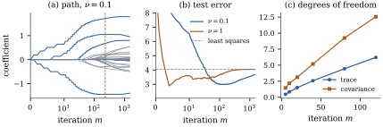

30.4 Componentwise boosting
Boosting is an algorithm, not a criterion: it
improves the fit by many small steps, each changing the
single coefficient that helps most, and the number of
steps plays the part of a penalty. Begun as a way to
combine classifiers (Freund and Schapire, 1997) and
recast as gradient descent on a loss (Friedman, Hastie
and Tibshirani, 2000; Friedman, 2001), with squared
error and single regressors it is the
30.4.1. The algorithm
Let
Fix a step size
- choose
- set
The estimate after
With unit-length columns, step 1 picks the column
most correlated with the residual. The residual is the
negative gradient of
30.4.2. Convergence to least squares
Boosting converges to the least squares fit at a geometric rate, slow when the design is badly conditioned.
Let
(a) each step lowers the residual sum of squares by exactly
(30.4.1)(b)
(c) the coefficients
Proof.
(a) Write
(b) Let
(c) The
The bound is crude, but it shows what controls the
speed: the step size and the conditioning of
Remark (When
30.4.3. Early stopping as shrinkage
For a base learner linear in the data, the effect of
stopping early is exact. Let an
(a)
(b) Let
(c) (Least squares learner.) If
(d) (Gradient descent.) The iteration
Proof.
- (a)
- (b)
For small
Degrees of freedom. For a linear
smoother the complexity is
by Proposition 30.4.2(a)
applied step by step. Bühlmann (2006) used
The script draws
Convergence. For
Early stopping. Least squares has risk
Degrees of freedom. Over

import numpy as np
def l2_boost(X, y, nu, steps):
"""Componentwise L2 boosting from b = 0; returns the coefficient path (steps + 1) x p."""
n, p = X.shape
norms2 = np.sum(X ** 2, axis=0)
b = np.zeros(p)
r = y.astype(float).copy()
path = [b.copy()]
for _ in range(steps):
corr = X.T @ r
j = np.argmax(corr ** 2 / norms2) # largest drop in the residual sum of squares
step = nu * corr[j] / norms2[j]
b[j] += step
r -= step * X[:, j]
path.append(b.copy())
return np.array(path)
rng = np.random.default_rng(3004)
n, p, sigma = 60, 30, 1.5
C = 0.5 ** np.abs(np.subtract.outer(np.arange(p), np.arange(p)))
L = np.linalg.cholesky(C)
beta = np.zeros(p)
beta[[0, 4, 9, 14, 19]] = [2.0, -1.5, 1.0, 1.0, -0.5]
def draw(m):
Z = rng.normal(size=(m, p)) @ L.T
return Z, Z @ beta + sigma * rng.normal(size=m)
X, y = draw(n)
mx, sx, my = X.mean(axis=0), X.std(axis=0), y.mean()
Xs, ys = (X - mx) / sx, y - my # centre and scale by the training data
def risk(path):
"""Expected squared error on a new case, for each row b of path (exact, from the design law)."""
d = beta[None, :] - path / sx # coefficient error on the original scale
offset = path @ (mx / sx) - my # error in the fitted intercept
return np.sum((d @ C) * d, axis=1) + offset ** 2 + sigma ** 2
b_ls = np.linalg.lstsq(Xs, ys, rcond=None)[0]
M = 1500
test_err = {}
for step in [0.1, 1.0]:
test_err[step] = risk(l2_boost(Xs, ys, step, M))
err_ls = risk(b_ls[None, :])[0]
m_best = int(np.argmin(test_err[0.1]))
print(f"least squares: risk {err_ls:.3f}")
print(f"nu = 0.1: best m = {m_best}, risk {test_err[0.1][m_best]:.3f}")
print(f"nu = 1.0: best m = {np.argmin(test_err[1.0])}, risk {test_err[1.0].min():.3f}")The next cell repeats the comparison with
mu = Xs @ (beta * sx) # the true mean, in the centred scale
def operator_trace(X, path, nu):
"""Trace of B_m = I - prod_k (I - nu H_{j_k}), with the selected columns held fixed."""
n = X.shape[0]
Rm = np.eye(n)
for k in range(len(path) - 1):
j = int(np.flatnonzero(path[k + 1] != path[k])[0])
x = X[:, j]
Rm -= nu * np.outer(x, x @ Rm) / (x @ x)
return n - np.trace(Rm)
reps, m_df = 300, 20
rng_df = np.random.default_rng(30041)
Y = mu + sigma * rng_df.normal(size=(reps, n)) # repeated responses, same design and mean
paths = [l2_boost(Xs, Y[r], 0.1, m_df) for r in range(reps)]
F = np.array([Xs @ P[-1] for P in paths]) # fitted values after m_df steps
cov_df = np.sum(np.mean((Y - Y.mean(axis=0)) * (F - F.mean(axis=0)), axis=0)) / sigma ** 2
trace_df = np.mean([operator_trace(Xs, P, 0.1) for P in paths])
print(f"m = {m_df}: mean trace {trace_df:.1f}, covariance df {cov_df:.1f}")The gap is the optimism of selection (Proposition 29.5.1).
For the lasso, by contrast, the covariance degrees of
freedom equal the expected number of nonzero
coefficients (Zou, Hastie and Tibshirani, 2007; we do
not reproduce the proof): shrinkage offsets the cost of
selection (compare Exercise (C1)).
In practice
30.4.4. Exercises
A. Check your understanding
Let
Solution.
B. Practice
Use Eq. 30.4.1
to show that
Solution. Summing Eq. 30.4.1
over
For the gradient descent iteration of Proposition 30.4.2(d)
with
Solution. Each increment
C. Going deeper
Under an orthonormal design with